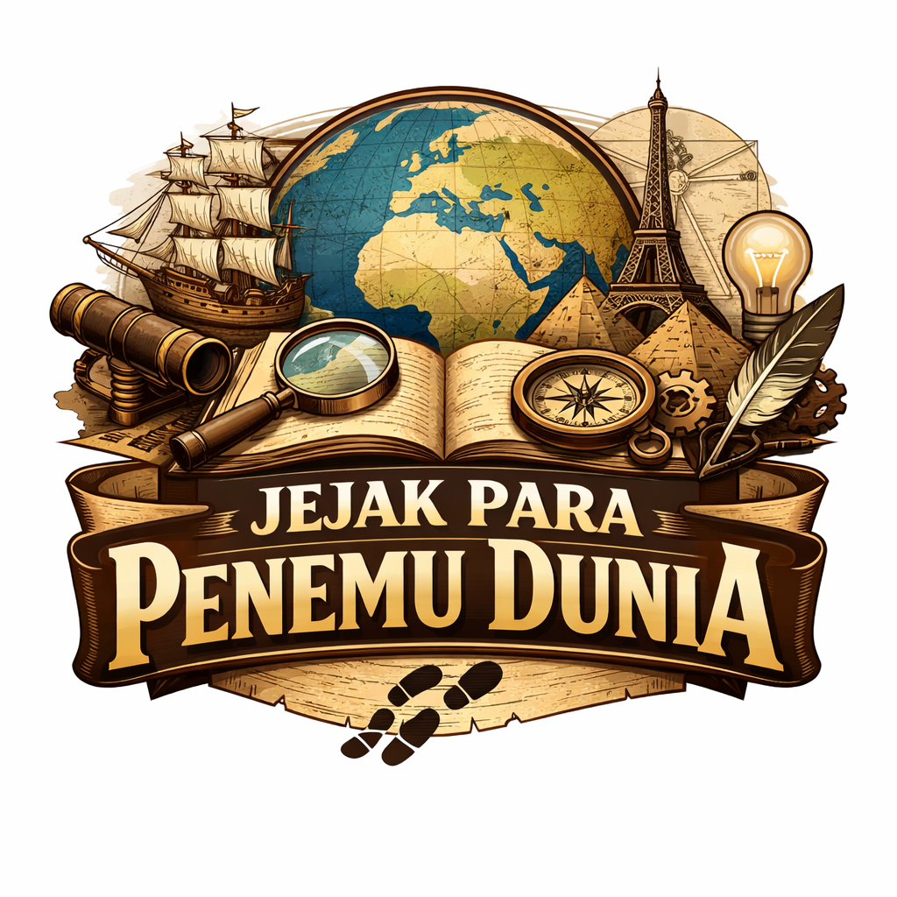

Mengenal tokoh-tokoh yang mengubah peradaban manusia
Dari lampu pijar hingga telepon, dari radio hingga radium, penemuan-penemuan besar telah mengubah cara kita hidup, bekerja, dan berkomunikasi. Mari kita telusuri jejak para penemu yang memberikan kontribusi luar biasa bagi peradaban manusia.
Jelajahi Penemu